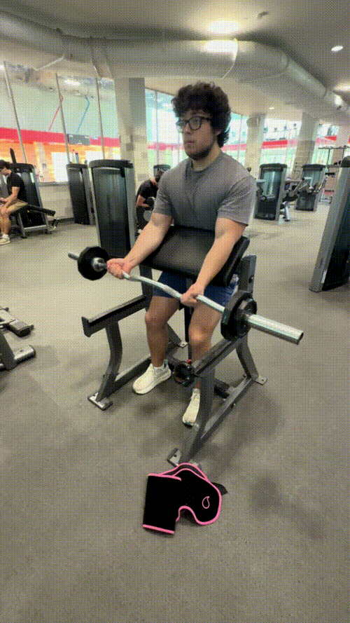

Preacher Curl


How to Perform
Sit at the preacher curl bench and position your upper arms securely against the pad. Grip the bar or dumbbells with your palms facing upward.
Curl the weight upward by bending your elbows while keeping your upper arms against the pad. Squeeze your biceps at the top, then lower the weight slowly until your arms are nearly straight.
Primary Muscles
Biceps brachii (Biceps)
Secondary Muscles
Brachialis (Biceps) and brachioradialis (Forearms)